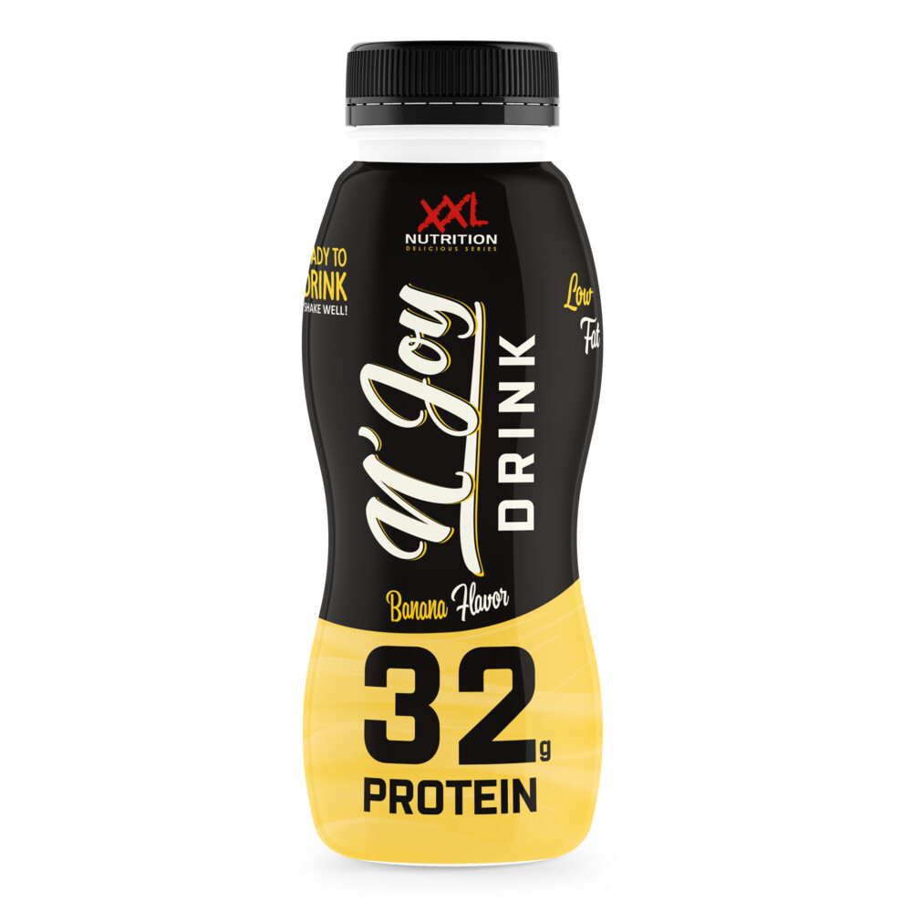
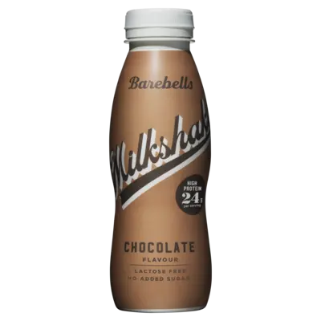
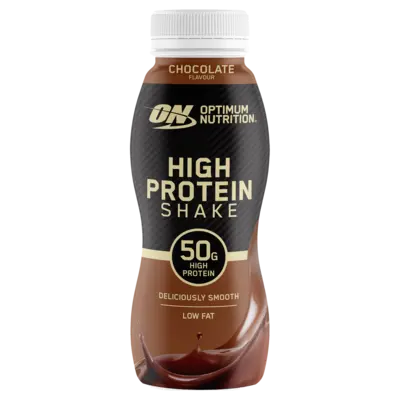

Kant-en-klare eiwitshakes (ook wel Ready to Drink of RTD-shakes genoemd) zijn voorgemengde eiwitdranken die direct klaar zijn voor consumptie. Je hoeft zelf niet meer te knoeien met eiwitpoeders, maatbekers of shakers; je trekt simpelweg de dop los en kunt meteen drinken.
Deze drankjes zijn speciaal ontwikkeld voor optimaal gemak, onderweg, na een zware workout of als een snelle eiwitrijke snack tussendoor. Ze bieden exact dezelfde voordelen voor spierherstel en spieropbouw als een zelfgemaakte shake van eiwitpoeder, maar hebben vaak een romigere textuur en een vergelijkbare smaak met reguliere chocomel of milkshakes.
Kant-en-klare shakes bevatten meestal hoogwaardige eiwitbronnen zoals melkeiwit of whey-concentraat, zijn vaak arm aan vetten en bevatten weinig tot geen toegevoegde suikers. Hierdoor zijn ze uitermate geschikt voor sporters met een drukke levensstijl die toch aan hun dagelijkse eiwitdoel willen komen.

Waarom de beste: De N'Joy Protein Drink is een van de populairste kant-en-klare eiwitdranken in de Benelux. Het biedt een gigantische hoeveelheid eiwit per flesje en heeft een heerlijke romige smaak die nauwelijks onderdoet voor een echte milkshake.
Kenmerken: Bevat maar liefst 32 gram eiwit per flesje van 310 ml. Laag in vet, bevat vrijwel geen toegevoegde suikers en hoeft vóór openen niet gekoeld bewaard te worden (hoewel gekoeld wel het lekkerst is).
Waar te vinden: Verkrijgbaar via de officiële webshop (xxlnutrition.com), geselecteerde sportscholen en diverse grote supplementenwinkels.

Waarom de beste: Barebells staat wereldwijd bekend om hun ongeëvenaarde smaaksensatie. Hun kant-en-klare milkshakes smaken fantastisch zacht en romig, wat het een ideale verwennerij maakt zonder schuldgevoel.
Kenmerken: Levert 24 gram eiwit per flesje (330 ml), is lactosevrij en bevat geen toegevoegde suikers. Ideaal voor mensen met een lactose-intolerantie of voor wie smaak op de allereerste plaats zet.
Waar te vinden: Ruim verkrijgbaar bij grote supermarkten (zoals Albert Heijn en Jumbo), tankstations, sportscholen en online via Body & Fit of Bol.com.

Waarom de beste: Van het meest vertrouwde eiwitmerk ter wereld. Optimum Nutrition biedt met deze shake een krachtige dosering van hoogwaardige eiwitten met een uitstekende smaak en lage vetwaarden.
Kenmerken: Bevat maar liefst 50 gram eiwit per flesje, is extreem laag in vet en bevat geen toegevoegde suikers. Ideaal voor wie in één keer een flinke portie eiwitten binnen wil krijgen.
Waar te vinden: Te bestellen via Body & Fit, Bol.com, Decathlon en bij diverse grotere fitness- en supplementenwinkels.